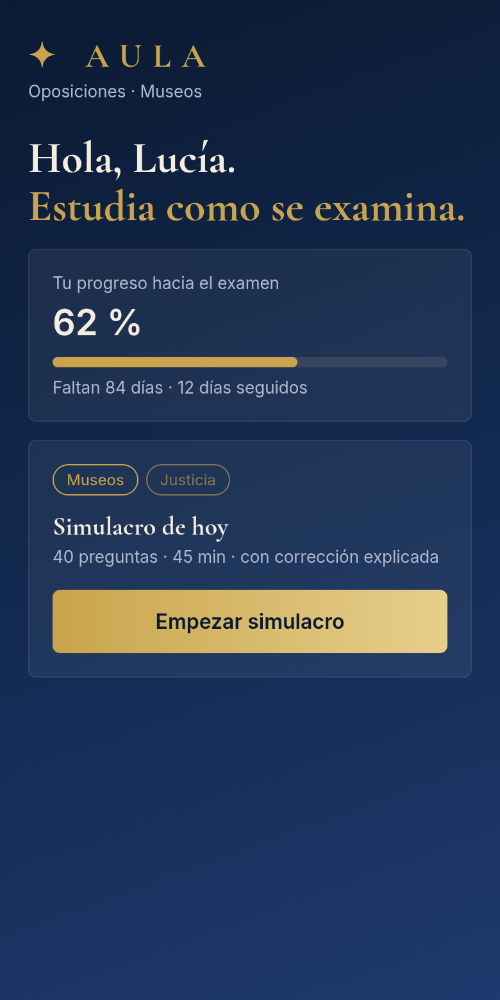
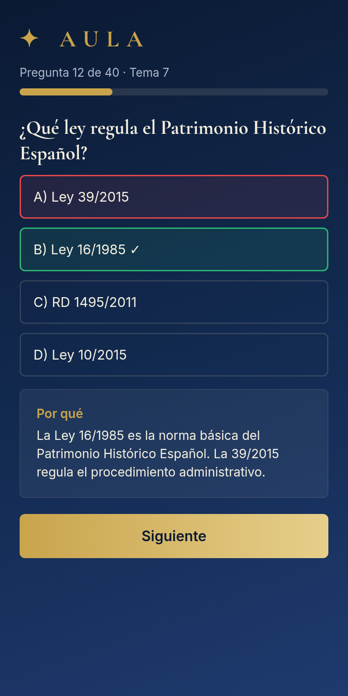
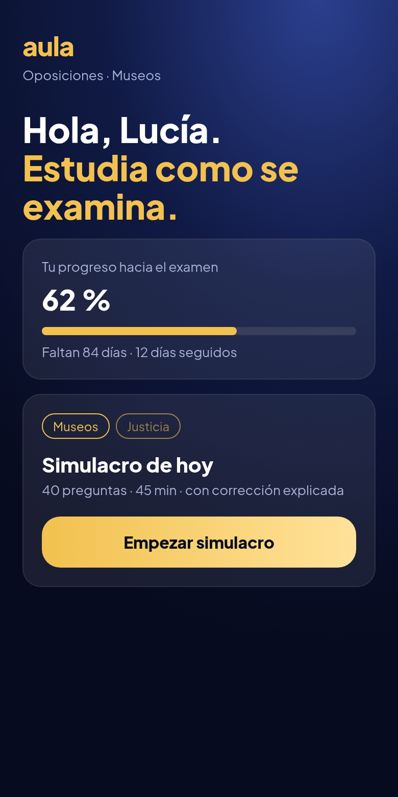
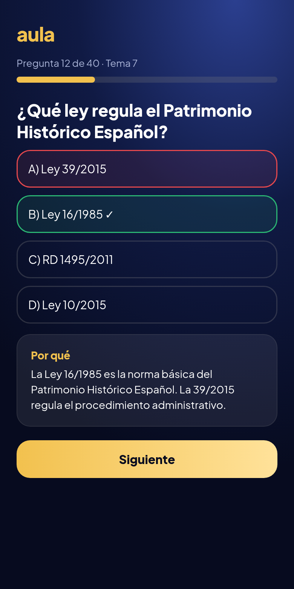
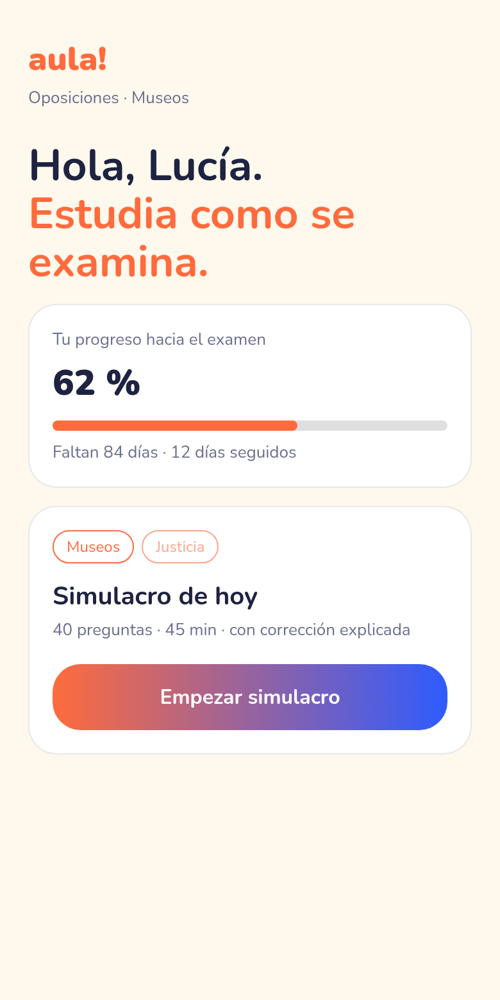
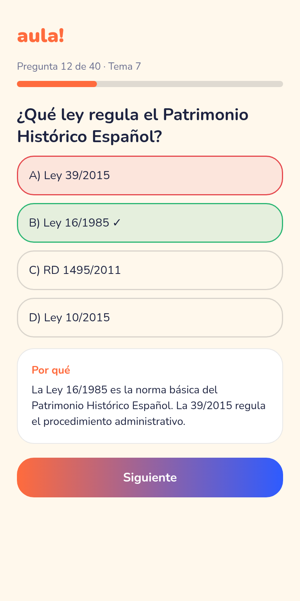
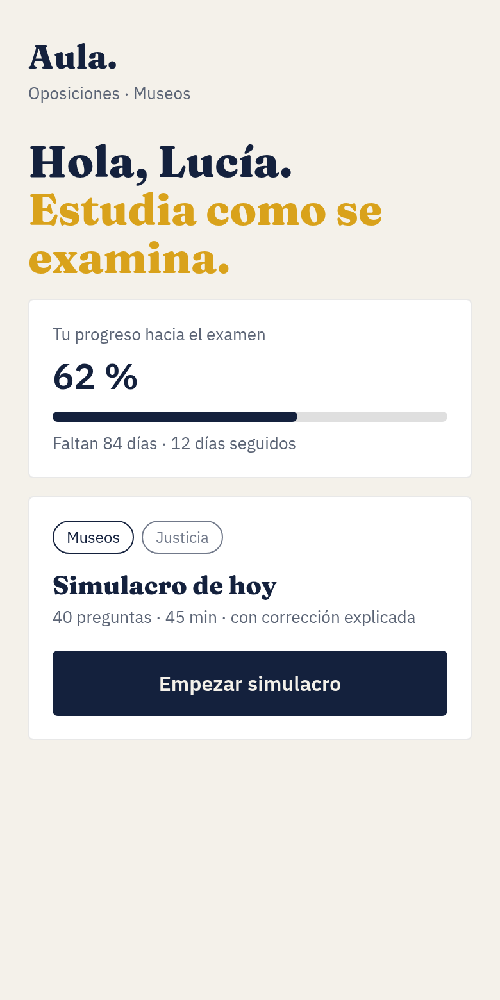
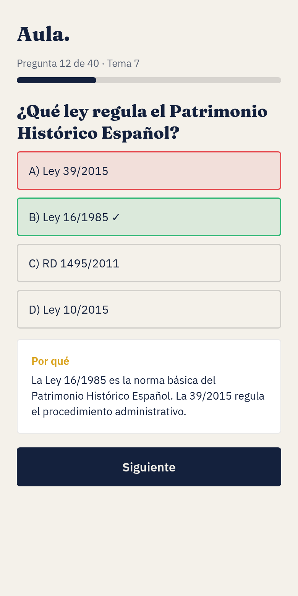

Aula — 4 направления бренда
Выбери одно (или скажи, что смешать). Слева — главный экран, справа — вопрос с разбором. Моя рекомендация — B · Aurora.
A · Claustro — академический престиж
Тёмно-синий градиент + золото, классическая антиква. Как Гарвард/Оксфорд, но в приложении: строгость и доверие.


Палитра: #0B1A33 → #1E3A6E, золото #C9A44C / #E6CF8B, текст #F3EEDF
Шрифты: Cormorant Garamond (заголовки) + Inter (текст)
Логотип и вертикали: Слово AULA разрядкой + золотая звезда-«печать». Вертикали: Museos — терракота #B5653A, Justicia — бордо #8E2C3A, Policía — сталь #4A6A8A, Educación — изумруд #2F7D5B (тонкая полоска/чип).
Голос (примеры):
- «Tu plaza se prepara cada día.»
- «Domina el temario, tema a tema.»
- «Has respondido como en el examen real.»
B · Aurora — современное премиум-приложение ⭐
Глубокий синий с «сиянием» и тёплым золотом, округлый гротеск. Премиально, но живо и современно.


Палитра: #070B1F → #101A44 → #2B3F8F, золото #F2C14E → #FFE29A
Шрифты: Plus Jakarta Sans (всё)
Логотип и вертикали: Строчное «aula» золотом, точка над i — как звезда-цель. Вертикали: Museos #FF8A5B, Justicia #9B8CFF, Policía #4FC3F7, Educación #5DD39E — цвет свечения в фоне.
Голос (примеры):
- «Hoy toca: 40 preguntas y un café.»
- «Vas por buen camino. 12 días seguidos.»
- «Tu esfuerzo cuenta. Tu código postal, no.»
C · Impulso — игровой, но взрослый
Контраст: светлый, тёплый, как Duolingo, но без детскости. Мотивация, серии, яркие кнопки.


Палитра: фон #FFF8EC, коралл #FF6B3D, синий #2E5BFF, текст #1D2340
Шрифты: Nunito (всё)
Логотип и вертикали: «aula!» — восклицательный знак как символ «aprobado». Каждая вертикаль — свой яркий цвет кнопок.
Голос (примеры):
- «¡Otra más y cierras el tema!»
- «Fallar aquí es gratis. En el examen, no.»
- «¡Racha de 12 días! Sigue así.»
D · Editorial — спокойный и умный
Как журнал/Brilliant: бумажный фон, тёмно-синий текст, золото только акцентом. Ясность и экспертиза.


Палитра: фон #F4F1EA, navy #14213D, золото #D9A21B
Шрифты: Fraunces (заголовки) + IBM Plex Sans (текст)
Логотип и вертикали: «Aula.» с точкой — «решено». Вертикали — маленький цветной маркер рядом с названием.
Голос (примеры):
- «Menos ruido. Más temario.»
- «Cada respuesta, explicada con la norma.»
- «Estudia con método, no con suerte.»
Что показало исследование
- Гарвард, Йель, Оксфорд, Стэнфорд, MIT: один глубокий цвет + антиква = доверие и престиж.
- Duolingo, Khan Academy: мотивация через прогресс, серии и тёплый голос, а не через «серьёзность».
- Coursera, edX, Brilliant: чистый гротеск, много воздуха, один акцентный цвет.
- MasterClass, Babbel: тёмная тема = «премиум», золото работает только как акцент.
- Испанские конкуренты (OpositaTest, MAD, CEF): в основном шаблонный «офисный» синий — тёмно-синий с золотом нас выделит.